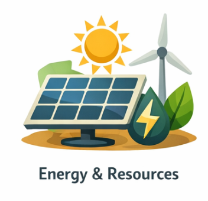
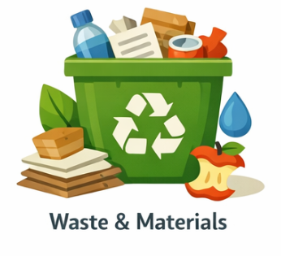
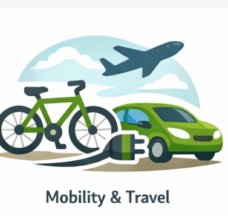
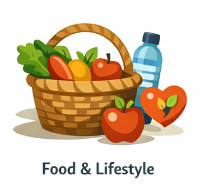
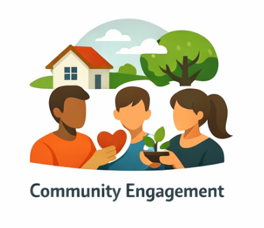
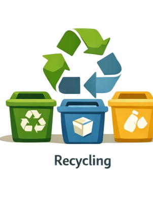

Tip 1: Use energy-efficient appliances and LED lighting to reduce energy consumption.
Tip 2: Implement a recycling program to minimize waste and promote sustainability.
Tip 3: Encourage the use of renewable energy sources such as solar panels or wind turbines.
Tip 4: Promote water conservation by installing low-flow fixtures and encouraging responsible water
usage.

Tip 1: Implement a composting program to reduce food waste and create nutrient-rich soil.
Tip 2: Encourage the use of reusable containers and utensils to minimize single-use plastics.
Tip 3: Promote paperless communication and digital documentation to reduce paper waste.
Tip 4: Organize regular clean-up events to keep the campus environment clean and litter-free.

Tip 1: Encourage carpooling, biking, or using public transportation to reduce carbon emissions from
commuting.
Tip 2: Provide bike racks and promote the use of bicycles for short-distance travel on campus.
Tip 3: Implement a shuttle service to reduce the need for inarticleidual car trips around campus.
Tip 4: Promote virtual meetings and remote work options to reduce the need for travel.

Tip 1: Encourage the consumption of locally sourced and organic food to reduce the carbon footprint
of food production.
Tip 2: Promote plant-based meal options in campus dining facilities to reduce the environmental
impact of meat production.
Tip 3: Organize workshops on sustainable living practices, such as reducing water usage and
minimizing waste.
Tip 4: Encourage students and staff to participate in sustainability challenges and initiatives to
foster a culture of environmental responsibility.

Tip 1: Organize sustainability-themed events and workshops to raise awareness and engage the campus
community.
Tip 2: Collaborate with local environmental organizations to provide volunteer opportunities for
students and staff.
Tip 3: Create a sustainability committee or club to lead initiatives and promote sustainable
practices on campus.
Tip 4: Encourage open dialogue and feedback from the campus community to continuously improve
sustainability efforts.

Tip 1: Set up clearly labeled recycling bins around campus to encourage proper waste disposal.
Tip 2: Educate the campus community about what can and cannot be recycled to reduce contamination in
recycling streams.
Tip 3: Partner with local recycling facilities to ensure that recyclable materials are properly
processed.
Tip 4: Organize recycling drives and competitions to encourage participation and raise awareness
about the importance of recycling.